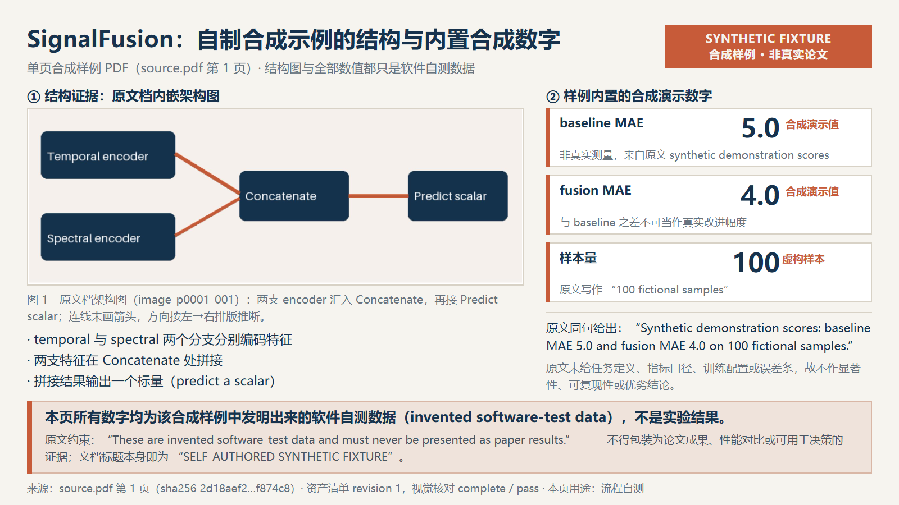

自主决策
模型根据工具结果选择下一步，不把全过程编码成固定 DAG；程序处理确定性的保存与检查。
MODEL-DRIVEN HARNESS · RESEARCH PROTOTYPE
模型自主选择工具、读取证据并制作页面；程序维护资源、版本与质量保护。
研究原型 · No license。已导出可编辑 PPTX；PowerPoint 自动渲染失败，最终视觉一致性尚未验收。无需 Key 浏览，无外部请求。
SignalFusion 是一页自有合成样例，不是真实科研论文。只输入 PDF，正式 Agent 自主解析、规划、写 HTML、渲染与审核；没有提供预写制作 HTML，也没有由监督者代写页面。

Demo CLI / apps/api 装配（无完整 HTTP 服务）
↓
agent_harness：模型 ↔ Agent Loop ↔ 工具选择
Context / Compaction · 渐进 Skills · Session / Events
↓
ppt_domain：PDF Manifest → 证据 / 规划 → HTML / 资源 / 绑定
Chromium 渲染 · 程序检查 · 独立内容 / 视觉审核
当前版本门禁 → PptxGenJS 可编辑导出
PowerPoint COM 最终渲染（本次未通过）模型根据工具结果选择下一步，不把全过程编码成固定 DAG；程序处理确定性的保存与检查。
来源哈希、资产 ID、页码、计划与绑定关联。导出使用已审核 HTML v3。
全部工具失败保留；进程退出、结构检查与最终视觉验收分别记录。
| 指标 | 实测 |
|---|---|
| 墙钟 | 755.3 秒，未超时 |
| 模型 | Qwen3.8 Flash 主 Agent 29 次 + 内容审核 1 次；DeepSeek Flash PDF/原图 2 次；豆包 Turbo 视觉 1 次 |
| Token | 累计输入 1,251,708 / 输出 38,150；缓存命中 1,155,072 为子集，不是单次上下文 |
| 工具 | 39 次 / 5 次报错；最后两次为 PowerPoint 渲染失败 |
| 页面 | HTML v1→v2→v3；v3 独立双维审核通过 |
| 导出 | 31 个可编辑文本、1 张独立图片、33 个其他形状；结构通过，最终视觉未验收 |
模型用量与范围 · 全部工具轨迹 · 来源与 SHA256
SDK 隐藏 HTTP 重试和费用未知，不按零计算。精简记录不公开原始对话、工具参数、会话日志或本机路径。
render_pptx 两次报 BadImageFormatException / 0x80070570，根因未确认。结构验证采用 compare_rendered_previews=false；内部 delivery 的 pass/complete 不能替代最终视觉验收。整体 incomplete。
本页与冻结产物，无 Key，无模型请求。本地直接打开。
python tools/serve_showcase.py正式 Harness + Tools + Skills。默认仅预检；实际运行需自备 Key。
python -m demos.single_pageFakeModel 脚本，真实工具/浏览器；演示恢复和保护，不是真实模型生成质量验证。
python -m demos.offline安装与命令见根 README。